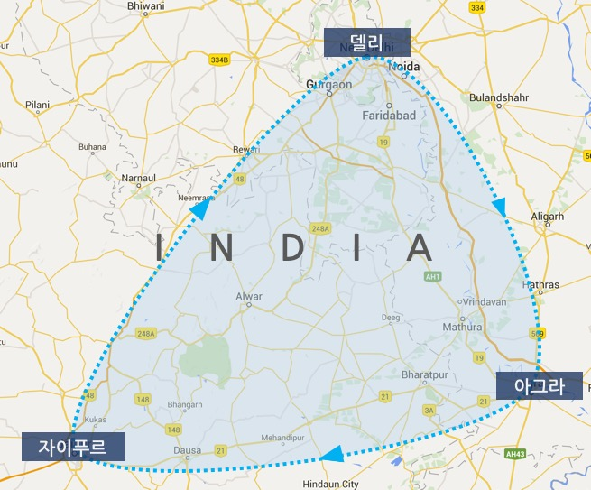
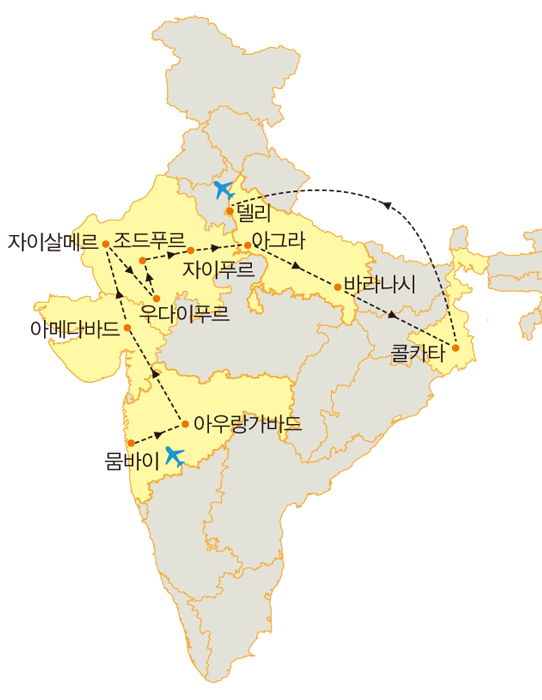
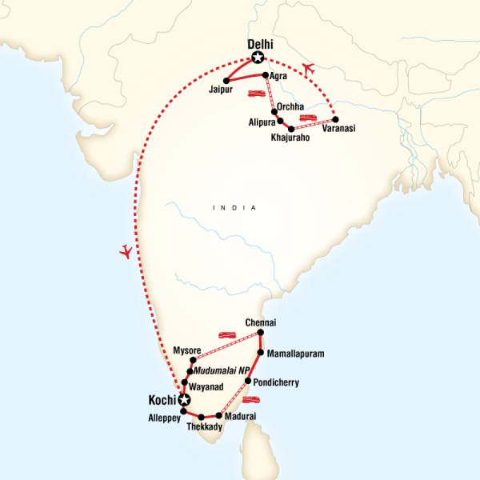

- 고려사항
- 일정 짜기
- 숙소 예약하기
- 기차 예약하기
일정짜기
인도는 대한민국 영토의 33배에 달하는 크기를 자랑한다.
그러다보니 다양한 민족과 종교가 공존하고 있고 그만큼 다양한 기후와 볼거리가 있는 나라다.
하지만 이는 반대로 말하면 일정과 동선을 잘못짜면 이동하느라 시간 다 보내고 여유없는 여행을 할 수도 있다는 말이다.
그래서 인도 여행의 가장 기본은 동선과 일정짜기라고 할 수 있다.
동선을 잘못 짜놓으면 진짜 생고생할 수 있다.
- 골든 트라이 앵글(7일~10일)
패키지 여행객과 단기 여행객들이 가장 많이 도는 코스로 흔히 골든 트라이 앵글이라 말하는 델리 - 아그라 - 자이푸르를 도는 코스다.
이 코스의 경우 각각 도시별 이동 시간이 차로 4~5시간 정도라 큰 부담이 없고 특히 "나 인도 다녀왔어"라고 말할 수 있는 타지마할, 인디아 게이트 등 인도를 대표하는 유적지를 포함하고 있어 많은 이들의 사랑을 받는다.
최근에는 여기에 이틀 정도 추가해서 갠지스 강이 있는 바라나시를 도는 일정도 많은 인기를 얻고 있다.

- 북인도 일주(30일)
여기서부턴 배낭여행객들이 선호하는 코스다.
사실상 북인도 일주는 한달 정도 잡아야 여유 있게 여행이 가능하다.
기존 골든 트라이 앵글 코스에 마날리, 뭄바이, 르 코르뷔지에가 설계한 계획 도시 찬디가르, 우다이푸르, 조드푸르 등을 추가하면 된다.
다만 최근에 많이 가는 북부 산악 지대나 국경 지역의 여행은 안전하다곤해도 영토 분쟁이 있는 곳이 많기에 주의를 요한다.

- 인도 일주(2달 이상)
사실 비행기만 타고 다닌다면 인도 일주는 한달 안에도 가능하지만, 실질적인 예산문제와 인도 여행 특성상 마음에 드는 여행지가 있으면 며칠 씩 눌러 앉아있는 여행객들이 많아 적어도 두 달은 있어야 북인도와 남인도를 두루 둘러보기 좋다.
사실 두 달도 아쉬워서 세 달 채워서 있는 여행객이 많은건 비밀
앞서 말했듯이 인도 일주에 중요한건 동선이다.
구역을 잘라서 그 구역 안에 있는 도시는 전부 다 보고 다른 지역으로 이동하는 식으로 기차와 숙박까지 비교적 완벽히 준비해야 실수가 없다.
뭐 트러블이 생기는게 여행의 묘미라지만 잘못하면 당장 떠나고 싶은 도시에서 2~3일씩 머무는 것도 고역이기 때문이다.
